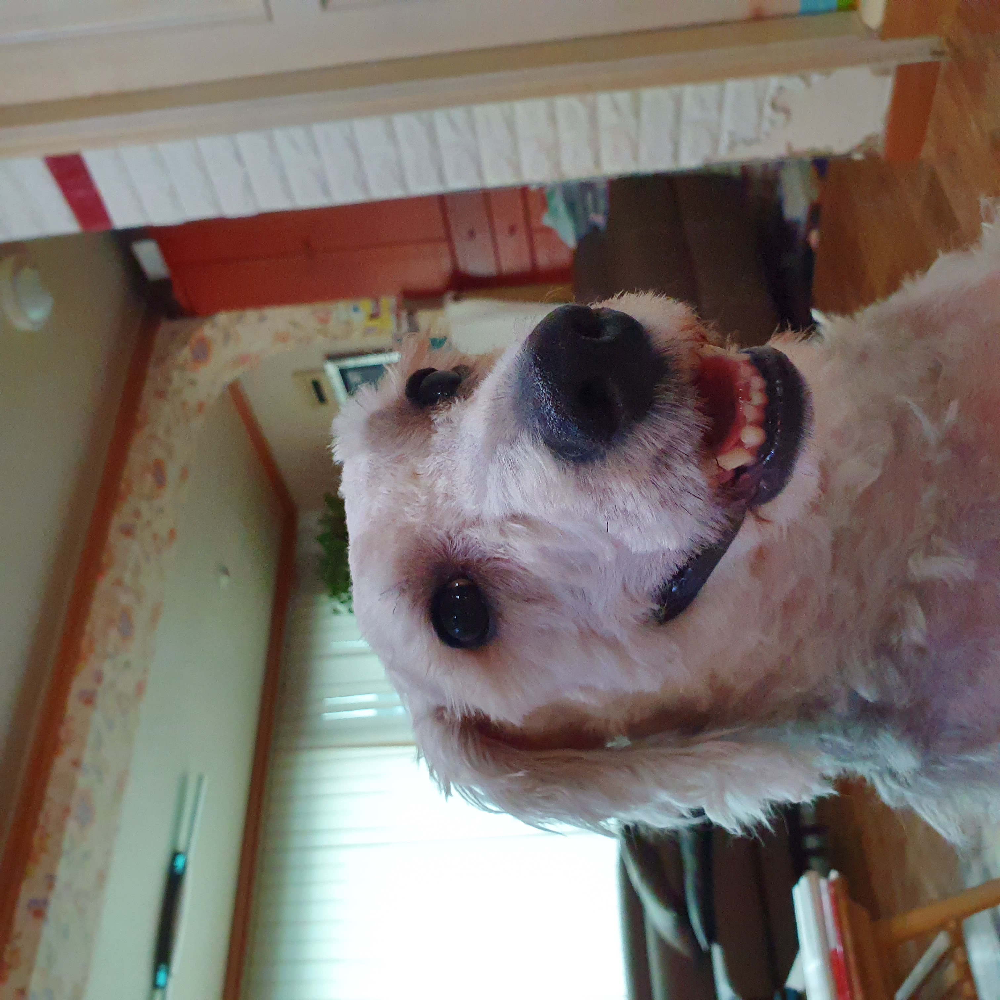

모모는 멍청한 척을 하지만 사실 똑똑하다. 무려 '손'도 알아듣는다. 이쪽 손, 저쪽 손도 구별하는 등 군견 급 지능을 드러낸다. 하지만 그는 식탐이 매우 뛰어나 어릴 적 툭하면 식탁 위의 음식을 주인이 없는 사이 다 먹었고, 2kg의 사료를 몰래 다 먹고, 생삼겹을 우적우적 씹어먹은 전적도 존재한다. 또한, 자신의 사료를 건들면 누구든 상관없이 문다. 실제로 아모단의 막내 단풍은 어릴 적 매우 많이 물렸다.
그가 한살이 지나고 사춘기가 오고 나서는 아모단의 두목 아지와 많은 다툼이 있었다. 서열 정리를 위한 싸움이었는데, 아직도 진행 중이다(지금은 모모가 4살).
모모는 엄청난 공 애호가인데, 한 번 공놀이를 시작하면 몇 시간이 지나도 멈추지 않는다. 공을 향한 집념은 그의 입으로 공을 갈기갈기 찢어놓고 나서야 잠잠해졌다. (대신 부작용으로 단풍이를 문다)
